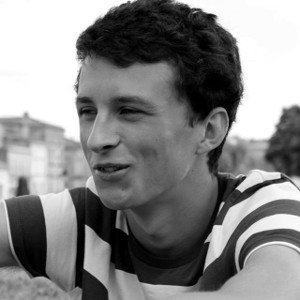

Hello ! I'm Vincent, a Rails and JavaScript web developer from Bordeaux, France, currently working at Sümo , a web agency near Bordeaux
Passionate about my job, I also like to take time for learning other things, traveling or kayaking.
I am currently looking for a full time job in Rails or/and Javascript